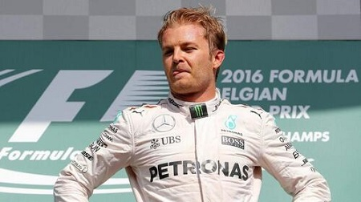
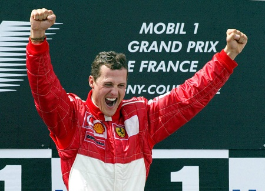

Lewis Carl
Davidson Hamilton is widely regarded as one of the greatest drivers in the history of Formula
One, and considered by
some (including the author of this page) to be the greatest of all time.
He won his first World Drivers' Championship with McLaren in 2008, before moving to the
Mercedes-AMG Petronas F1 Team
in 2013, with whom he has won a further five titles.
He is most successful drivers in the history of the sport with seven World
Championship titles,
a record he currently shares with Michael Schumacher.
He has held the records for:
all-time most career points
the most pole positions
all-time most podium finishes
most grand slams in a season
the most points in a season
Hamilton holds the record for the most race wins in Formula One history. Michael
Schumacher, the previous record
holder, is second with 91 wins, and Sebastian Vettel is third with 53
victories.
Lewis Hamilton, Driver #44
World Championship Titles:
#1 2008
Hamilton won his first title in dramatic fashion; on the last corner of
the last lap in the last race of the season, becoming the then-youngest Formula One World
Champion in history as he denied race-winner Felipe Massa the title
by one point.
legend is born McLaren MP4-23Felipe Massa
#2 2014
Changes to regulations ahead of the 2014 season, which mandated the use
of turbo-hybrid
engines , contributed to the start of a highly successful era for Hamilton as he found
himself in the most dominant car on the grid. That year saw Mercedes win 16 of the 19 races that
season, 11 of those secured by Hamilton as he prevailed in a season-long duel for the title
against teammate Nico
Rosberg.

#3 2015
Hamilton dominated the 2015 season, winning ten races finishing on the
podium a record seventeen times as he matched his hero Ayrton Senna
with three World Championships titles.
#4 2017
Scuderia Ferrari and their four World Champion Sebastian Vettel became Hamilton's
closest rival as the pair exchanged the championship lead throughout 2017 in a tense title
fight. Hamilton registered 11 pole positions that season as he took the record for the all-time
most pole positions, and his consistency (finishing every race in the points), as well as a lack
of a serious challenge from his new teammate Valtteri Bottas,
saw him record nine race victories and secure his fourth World Drivers' title as he overturned a
points deficit to Vettel in the first half of the season, ultimately wrapping the title up in
Mexico with two races to spare.
#5 2018
The 2018 season was the first time that two four-time World Champions,
Hamilton and Vettel, would be competing for a fifth title and was billed as the Fight for Five
by journalists and fans. As with the season before, Ferrari and Vettel appeared to have the
upper hand for much of the season, topping the standings until the half-way point. However,
Vettel's season unravelled with a number of driver and mechanical errors, while Hamilton's run
of six wins in seven in the latter half of the season saw Hamilton clinch the title in Mexico
for a second year running as he set a new record for the most points scored in a season (408)
#6 2019
Having signed a contract with Mercedes that lasts until 2020, it was
confirmed Hamilton would defend his title in 2019. Hamilton led the drivers' standings for the
majority of the season, fending off title challenges from team-mate Bottas, the Honda-powered Red
Rull of Max
Verstappen and Ferrari's recently promoted Charles Leclerc, to
clinch his sixth drivers' crown at the 2019 United States Grand Prix with two races remaining.
#7 2020
At the Portuguese Grand Prix, Hamilton took his 92nd Formula One win, breaking the record
previously
held by Michael Schumacher. His victory in Turkey saw him seal his seventh drivers' title,
equalling
Schumacher's record of seven World Championship titles.

Hamilton's driving career is only half the story of a great man. Visit: Lewis Hamilton.com